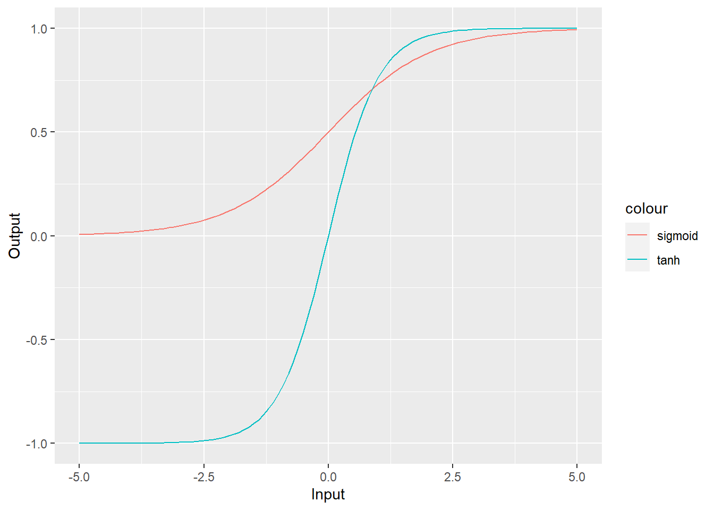

Chapter 9 Neural Network
9.1 Introduction
人工神经网络（Artificial Neural Network，即ANN ），是20世纪80 年代以来人工智能领域兴起的研究热点。它从信息处理角度对人脑神经元网络进行抽象， 建立某种简单模型，按不同的连接方式组成不同的网络。神经网络是一种运算模型，由大量的节点（或称神经元）之间相互联接构成。每个节点代表一种特定的输出函数，称为激励函数（activation function）。每两个节点间的连接都代表一个对于通过该连接信号的加权值，称之为权重，这相当于人工神经网络的记忆。网络的输出则依网络的连接方式，权重值和激励函数的不同而不同。而网络自身通常都是对自然界某种算法或者函数的逼近，也可能是对一种逻辑策略的表达。
开发神经网络模型的动机（或者说神经网络模型的优点）在于，可以对输入变量（特征）和 响应变量之间的高度复杂关系进行建模，特别是关系呈现高度非线性时。神经网络模型的构建和 评价不需要基本假设，对于定量和定性响应变量都适用。
对神经网络的一种常见的批评就是，它的结果是一个黑盒。换言之，没有一个 带有系数的等式可供检验并分享给业务伙伴。实际上，结果几乎是无法解释的。另外一种批评意 见的主要内容是，当初始的随机输入发生变化时，我们不清楚结果会发生什么变化。还有，神经网络的训练过程需要昂贵的时间和计算成本。
“神经网络”的概念相当宽泛，它包括了很多相关的方法。
9.2 反向传播方法进行训练的前馈神经网络
在这个简单的网络中，输入（又称协变量）由两个节点（又称神经元）组成。标有1的神经 元代表一个常数，更确切地说，是截距。X1代表一个定量变量，W代表权重，会和输入节点的值 相乘。输入节点的值在与W相乘后传递到隐藏节点。你可以有多个隐藏节点，但是工作原理和一 个隐藏节点没有什么不同。在隐藏节点H1中，所有加权后的输入值被加总。因为截距为1，所以 这个输入节点的值就是权重W1。然后就是见证奇迹的时刻：加总后的值通过激活函数进行转换， 将输入信号转换为输出信号。在这个简单例子中，H1是唯一的隐藏节点，它的值被乘以W3，成 为响应变量Y的估计值。这就是算法的前馈部分
完成一次完整的“训练”，还 要进行反向传播过程，基于学习到的知识来训练模型。为了初始化反向传播过程，需要基于损失 函数确定误差，损失函数可以是误差平方总和，也可以是交叉熵，或者其他形式。因为权重W1 和W2最初被设定为[1, 1]之间的随机数，所以初始的误差可能会很大。反向传播时，要改变权重 值以使损失函数中的误差最小。这样就完成了一次完整的训练。这个过程不断继续，使用梯度下降方法减小误差， 直到算法收敛于误差最小值或者达到预先设定的训练次数。如果假设本例中的激活函数是简单线 性的，那么结果为Y = W3(W1(1) + W2(X1))。
有很多种激活函数可供使用，其中包括一个简单线性函数，还有用于分类问题的sigmoid函 数，它是逻辑斯蒂函数的一种特殊形式（第3章）。当输出变量是基于某种阈值的二值变量（0或1） 时，可以使用阈值函数。其他常用的激活函数还有Rectifier、Maxout以及双曲正切函数（tanh）。

## 画出tanh函数 tanh(x) = 2 * sigmoid(2x) - 1， 绘制并比较tanh函数和sigmoid函数
library(ggplot2)
s <- sigmoid(x)
t <- tanh(x)
z <- data.frame(cbind(x, s, t))
ggplot(z, aes(x)) +
geom_line(aes(y = s, color = "sigmoid")) +
geom_line(aes(y = t, color = "tanh")) +
labs(x = "Input",y = "Output") 
tanh函数：
假设对数据做了缩放处理，使数据的均值为0、方差为1，那么tanh函数就可以提供一组均值接近于0(以0为中心)的权重。这样的权重有助于避免偏差， 并可以提高收敛速度。
如果使用sigmoid函数作为激活函数，那么就意味着从输出神经元到输入神经元都是正的权重。在后向传播过程中，这样就会导致各层之间的权重或者都是正的，或者都是负的，从而引发性能方面的问题。还有，因为sigmoid函数在两个尾部(0和1)的 梯度接近于0，所以在后向传播过程中，几乎没有信号在不同层次的神经元之间流动。9.3 Application
9.3.1 数据准备
## 数据保存在MASS包, Neuralnet包用于构建模型，caret包用于数据准备，vcd包会帮助进行数据可视化
## 数据集包括256个观测和7个变量。所有变量都是分类变量，响应变量use有两个水平，auto和noauto
## 表格来探索数据
data(shuttle)
str(shuttle)## 'data.frame': 256 obs. of 7 variables:
## $ stability: Factor w/ 2 levels "stab","xstab": 2 2 2 2 2 2 2 2 2 2 ...
## $ error : Factor w/ 4 levels "LX","MM","SS",..: 1 1 1 1 1 1 1 1 1 1 ...
## $ sign : Factor w/ 2 levels "nn","pp": 2 2 2 2 2 2 1 1 1 1 ...
## $ wind : Factor w/ 2 levels "head","tail": 1 1 1 2 2 2 1 1 1 2 ...
## $ magn : Factor w/ 4 levels "Light","Medium",..: 1 2 4 1 2 4 1 2 4 1 ...
## $ vis : Factor w/ 2 levels "no","yes": 1 1 1 1 1 1 1 1 1 1 ...
## $ use : Factor w/ 2 levels "auto","noauto": 1 1 1 1 1 1 1 1 1 1 ...##
## auto noauto
## 145 111## wind head tail
## magn Light Medium Out Strong Light Medium Out Strong
## use
## auto 19 19 16 18 19 19 16 19
## noauto 13 13 16 14 13 13 16 13
## 要生成统计图，也可以不使用structable()建立的对象，因为mosaic()函数也 可以接受公式
## 图中阴影发生了变化，反映出原假设被拒绝，变量之间具有相关性
mosaic(use ~ error + vis, shuttle)
##
## stab xstab
## auto 81 64
## noauto 47 64##
## stab xstab
## auto 0.3164062 0.2500000
## noauto 0.1835938 0.2500000##
## Pearson's Chi-squared test with Yates' continuity correction
##
## data: shuttle$use and shuttle$stability
## X-squared = 4.0718, df = 1, p-value = 0.0436## 神经网络的数据准备是非常重要的，因为所有协变量和响应变量都必须是数值型。在这个案 例中，虽然所有变量都是分类变量，但caret包可以帮助我们快速建立虚拟变量作为输入特征：
dummies <- dummyVars(use ~. ,shuttle, fullRank = T)
dummies## Dummy Variable Object
##
## Formula: use ~ .
## 7 variables, 7 factors
## Variables and levels will be separated by '.'
## A full rank encoding is used## [1] "stability.xstab" "error.MM" "error.SS" "error.XL"
## [5] "sign.pp" "wind.tail" "magn.Medium" "magn.Out"
## [9] "magn.Strong" "vis.yes"## stability.xstab error.MM error.SS error.XL sign.pp wind.tail magn.Medium
## 1 1 0 0 0 1 0 0
## 2 1 0 0 0 1 0 1
## 3 1 0 0 0 1 0 0
## 4 1 0 0 0 1 1 0
## 5 1 0 0 0 1 1 1
## 6 1 0 0 0 1 1 0
## magn.Out magn.Strong vis.yes
## 1 0 0 0
## 2 0 0 0
## 3 0 1 0
## 4 0 0 0
## 5 0 0 0
## 6 0 1 0##
## 0 1
## 111 1459.3.2 模型构建
在nerualnet包中，我们要使用 的函数的名字就叫作nerualnet()。除了模型公式，还有4个关键参数需要说明。
hidden：每层中隐藏神经元的数量，最多可以设置3个隐藏层，默认值为1。
act.fct：激活函数，默认为逻辑斯蒂函数，也可以设置为tanh函数。
err.fct：计算误差，默认为sse；因为我们处理的是二值结果变量，所以要设置成ce， 使用交叉熵。
linear.output：逻辑参数，控制是否忽略act.fct，默认值为TRUE；对于我们的数据来 说，需要设置为FALSE。
*还可以指定算法，默认算法是弹性反向传播
## neuralnet中不允许用y ~指定数据集中除响应变量之外的所有变量, 绕过这种限制的方式是，使用as.formula()函数。先 建立一个保存变量名的对象，然后用这个对象作为输入，从而将变量名粘贴到公式右侧
n <- names(shuttleTrain)
form <- as.formula(paste("use ~", paste(n[!n %in% "use"], collapse = " + ")))
form## use ~ stability.xstab + error.MM + error.SS + error.XL + sign.pp +
## wind.tail + magn.Medium + magn.Out + magn.Strong + vis.yesset.seed(1)
fit <- neuralnet(form, data = shuttleTrain, hidden = c(2, 1), err.fct = "ce",
linear.output = F)
fit$result.matrix## [,1]
## error 0.006745424
## reached.threshold 0.008028217
## steps 251.000000000
## Intercept.to.1layhid1 -2.913396291
## stability.xstab.to.1layhid1 1.061971240
## error.MM.to.1layhid1 -1.507105083
## error.SS.to.1layhid1 -1.960491707
## error.XL.to.1layhid1 -0.557518418
## sign.pp.to.1layhid1 -0.362270154
## wind.tail.to.1layhid1 -0.093003853
## magn.Medium.to.1layhid1 0.012907060
## magn.Out.to.1layhid1 1.118360425
## magn.Strong.to.1layhid1 0.257518170
## vis.yes.to.1layhid1 4.650735293
## Intercept.to.1layhid2 1.560214842
## stability.xstab.to.1layhid2 -1.204509288
## error.MM.to.1layhid2 -0.000887696
## error.SS.to.1layhid2 0.904825578
## error.XL.to.1layhid2 -0.231255788
## sign.pp.to.1layhid2 0.382575500
## wind.tail.to.1layhid2 0.592086158
## magn.Medium.to.1layhid2 0.058625357
## magn.Out.to.1layhid2 -1.051535539
## magn.Strong.to.1layhid2 0.179652043
## vis.yes.to.1layhid2 -2.693403633
## Intercept.to.2layhid1 1.615079923
## 1layhid1.to.2layhid1 -15.554046037
## 1layhid2.to.2layhid1 14.713278061
## Intercept.to.use -12.182285372
## 2layhid1.to.use 24.844204493## Interpretation: 误差非常低，仅为0.0099。steps的值是算法达到阈值所需的训练次数，也就是误 差函数的偏导数的绝对值小于阈值（默认为0.1）时的训练次数。权重最高的神经元是 vis.yes.to.1layhid1，权重值为6.21
## 广义权重: 被定义为第i个协变量 对对数发生比的贡献： 广义权重表示每个协变量xi的影响，可以类比为回归模型中的第i个回归系数。但是，广义权 重依赖于所有其他协变量。
head(fit$generalized.weights[[1]])## [,1] [,2] [,3] [,4] [,5]
## 1 -0.0058040120 0.0022578370 0.0061042939 2.793278e-05 0.0018809227
## 4 -0.0007663366 0.0003444101 0.0008416829 2.706483e-05 0.0002491154
## 5 -0.0006637593 0.0003076139 0.0007361950 2.814040e-05 0.0002159244
## 6 -0.0007314225 0.0004031544 0.0008607337 6.341801e-05 0.0002389983
## 7 -0.0444148565 0.0195765927 0.0484852322 1.374447e-03 0.0144317093
## 8 -0.0367735469 0.0164391436 0.0403214453 1.254416e-03 0.0119526383
## [,6] [,7] [,8] [,9] [,10]
## 1 0.0022094031 1.855860e-04 -0.0053538239 2.417218e-04 -0.016392872
## 4 0.0002785484 2.252078e-05 -0.0007127678 1.914664e-05 -0.002234323
## 5 0.0002386163 1.910769e-05 -0.0006185411 1.401738e-05 -0.001949295
## 6 0.0002446797 1.830607e-05 -0.0006897356 -2.256756e-06 -0.002244884
## 7 0.0162533313 1.321717e-03 -0.0412613771 1.215746e-03 -0.128915111
## 8 0.0133914379 1.084446e-03 -0.0341918523 9.429830e-04 -0.107084095## 实现神经网络的可视化
plot(fit)
## 看vis.yes和wind.tail的广义权重图
## vis.yes的广义权重非常不对称，而wind.tail的权重则分布得非常均匀，说明这个变量基本不具备预测能力
par(mfrow=c(1,2))
gwplot(fit, selected.covariate = "vis.yes")
gwplot(fit, selected.covariate = "wind.tail")
## 看模型的表现如何，可以通过在compute()函数中指定fit模型和协变量来实现
resultsTrain <- compute(fit, shuttleTrain[, 1:10])
## 得到的结果是概率的形式，所以要将结果转换成0或1，然后生成混淆矩阵
predTrain <- resultsTrain$net.result
predTrain <- ifelse(predTrain >= 0.5, 1, 0)
table(predTrain, shuttleTrain$use)##
## predTrain 0 1
## 0 73 0
## 1 0 107## Interpretation: 天哪, 正确率达到了100%！
## 在测试集上的表现
resultsTest <- compute(fit, shuttleTest[,1:10])
predTest <- resultsTest$net.result
predTest <- ifelse(predTest >= 0.5, 1, 0)
table(predTest, shuttleTest$use)##
## predTest 0 1
## 0 38 2
## 1 0 36## integer(0)## stability.xstab error.MM error.SS error.XL sign.pp wind.tail magn.Medium
## 215 0 0 1 0 1 1 0
## magn.Out magn.Strong vis.yes use
## 215 0 1 1 1